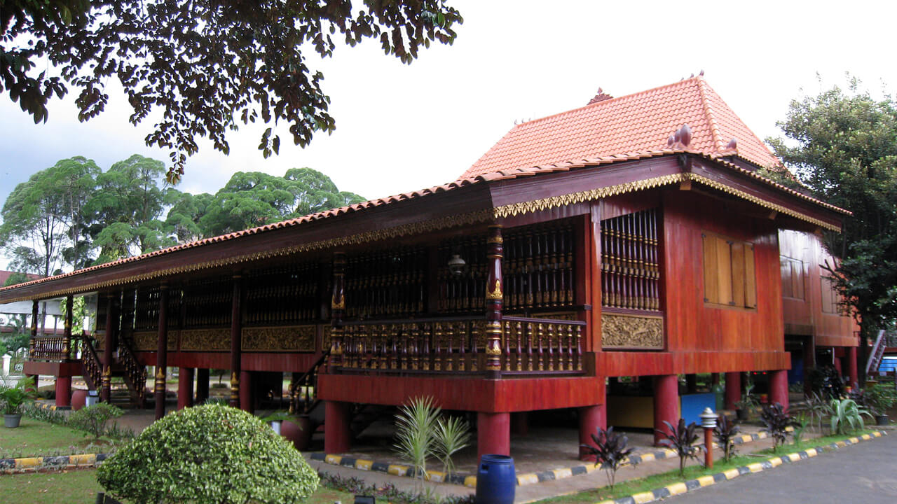
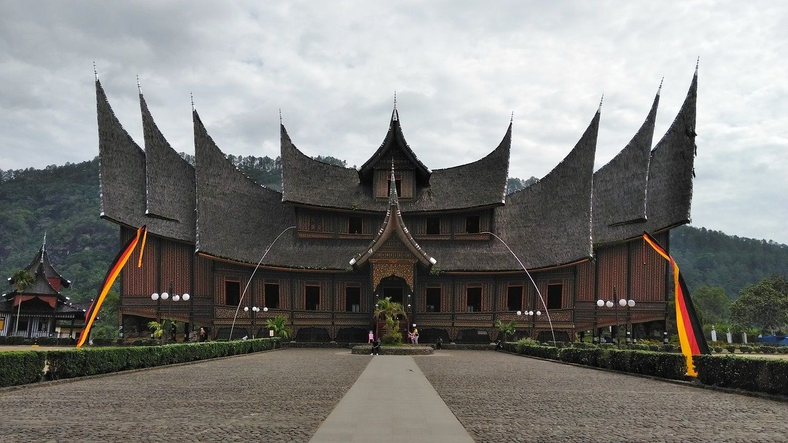

Rumah Adat Joglo

Rumah adat Joglo merupakan rumah tradisional yang memiliki material utama dari kayu jati. Biasanya
Joglo
dibangun oleh
masyarakat dengan status sosial tinggi seperti kalangan bangsawan atau kerajaan, karena membutuhkan
biaya
yang besar. Pengertian Joglo sendiri berasal dari kata Tajug Loro (Juglo) yang artinya dua gunung.
Dalam
filosofi Jawa, gunung adalah tempat yang tinggi dan sakral.
Rumah Adat Limas

Rumah Limas adalah rumah tradisional Provinsi Sumatera Selatan. Gaya Rumah Limas seperti rumah
panggung,
memiliki lima
tingkat yang berfilosofi dengan menyesuaikan geografi, dan kepercayaan masyarakat setempat.
Sesuai dengan namanya, Rumah Limas adalah rumah tradisional berbentuk limas yang dibuat dengan gaya
panggung.
Bangunan
khas daerah Palembang ini dibangun bertingkat. Kumpulan tingkat-tingkatnya disebut masyarakat
sebagai
Bengkalis yang
memiliki makna tersendiri. Luasan Rumah Limas berkisar mulai dari 400 hingga 1000 meter persegi,
sering
kali
dipinjamkan
pemilik rumah untuk digunakan sebagai tempat pesta pernikahan dan acara adat.
Rumah Adat Gadang

Rumah Gadang sering disebut dengan Rumah Bagonjong. Sebutan ini berasal dari bentuk khas atapnya yang
melengkung runcing
yang disebut gonjong. Atap rumah rumah adat Sumatera Barat juga disebut mirip dengan lengkung tanduk
kerbau
yang
biasanya terbuat dari ijuk.
Menggunakan gaya rumah panggung, badan rumah adat Suku Minangkabau ini berbentuk trapesium dengan
bagian
dalam rumah
melandai seperti dalam badan kapal. Dinding-dindingnya terbuat dari kayu dengan hiasan ukiran.